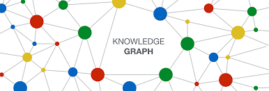

How I Integrated Knowledge Graphs into RAG for Smarter Retrieval & Generation
RAG works well until it needs to understand how things are related.
Retrieval-augmented generation (RAG) is a powerful technique that boosts the abilities of language models by combining two key steps: retrieving relevant information from an external source and then generating a response based on both the original question and the retrieved content. Instead of relying only on what the model has "memorized," RAG allows it to look things up in real-time just like we do when we search online before answering a tricky question.
But as I began learning about RAG, I noticed a common limitation: the retrieved results are often loosely related to the query or the retrieved chunks often contain keywords from the query but miss the context or logical connection needed for coherent answers., which leads to vague or disconnected answers. This made me wonder could we make retrieval smarter by helping the system understand the relationships between facts?
That curiosity led me to Knowledge Graphs (KGs) a structured way to represent information using entities and their relationships. Unlike plain text, KGs connect concepts in a meaningful, graph like structure. When combined with RAG, they have the potential to improve retrieval accuracy, enable multi-hop reasoning, and make the model's output more explainable.
In this blog, I'm documenting my learning journey into combining KGs with RAG. I'll walk through:
- Why traditional RAG retrieval can fall short
- What Knowledge Graphs are and how they work
- How I integrated a lightweight KG into my RAG workflow
- Real examples showing how this approach improved factual accuracy and reasoning
What is Retrieval-Augmented Generation (RAG)?
RAG is a technique that combines the strengths of retrieval-based and generative models. The core idea is simple: instead of generating answers solely based on pre-trained knowledge, a RAG system first retrieves relevant documents or facts from an external source, then uses those to generate a grounded response.
RAG Pipeline – Step-by-Step:
- Collect Your Documents Start with a set of text documents these could be articles, manuals, PDFs, or any text-based data.
- Chunk the Text Break long documents into smaller pieces. This makes retrieval more accurate.
- Generate Embeddings Use an embedding model to turn each chunk into a numerical vector a machine-readable format that captures meaning.
- Store Embeddings in a Vector Database Save all these chunk embeddings into a searchable vector store like FAISS, Pinecone, or ChromaDB.
- User Asks a Question (Query) A user types a question, like "What are the side effects of this medicine?"
- Embed the Query Convert the question into an embedding using the same model as step 3.
- Retrieve Relevant Chunks Search the vector database to find chunks with embeddings similar to the query. These are the most relevant pieces of text.
- Pass to the Generator Feed the retrieved text chunks and the original query to a language model (like GPT or BART).
- Generate the Final Answer The model combines the information and generates a coherent, informed answer.
While RAG significantly improves factuality by grounding answers in retrieved-context, it has a key limitation: it treats knowledge as isolated text blocks. Because there's no structure linking the retrieved facts, it often fails on questions that require multi-step reasoning, temporal understanding, or entity relationships. This is where Knowledge Graphs come in.
What is Knowledge Graph?
Knowledge Graph provides a way to sort and organize the data that emphasizes the relationship between things. In contrast to traditional relational databases which organize data into tables with rows and columns, Knowledge graphs instead use a graph base structure with nodes that represent entities and edges that represent relationships between entities.
- Nodes represent entities (such as people, places, or things)
- Edges represent relationships between those entities (like "works at," "located in," or "related to")
Integrating Knowledge Graphs into the RAG Pipeline
Now that we've explored what Knowledge Graphs and RAG are individually, it's time to bring them together. While RAG retrieves relevant information from unstructured text, it often lacks an understanding of how concepts are connected. Knowledge Graphs solve this by encoding information as structured entities and relationships. They allow us to represent "how things relate" rather than just "what things are," which makes them ideal for guiding or refining the retrieval process.
To explore this integration in a real-world scenario, we built a complete Knowledge Graph–enhanced RAG pipeline by combining the capabilities of Neo4j (for graph storage and querying), LangChain (for managing the retrieval and generation flow), and OpenAI (for embedding and answer generation). The goal was to overcome the limitations of traditional RAG particularly its shallow understanding of how facts are related by injecting structured relationships directly into the retrieval phase.
We used a rich, Wikipedia-style article on Harvard University as our source of unstructured text. From this document, we extracted key entities (such as "Harvard University," "Cambridge," "Massachusetts General Court") and built a Knowledge Graph that links these entities with meaningful relationships (like ,located in, founded by, has campus, etc.). This graph served as a structured overlay to the original text.
Once the graph was in place, we integrated it into the RAG pipeline. Instead of retrieving chunks purely based on vector similarity, we used the graph to guide retrieval, prioritizing chunks related to the entities and paths discovered in the graph traversal. This not only improved accuracy but also enabled more context-aware and explainable answers.
To organize our work, we structured the project into a six-stage process, covering everything from document preprocessing to entity linking, graph construction, and final answer generation.
Step 1: Document Loading & Chunking
The first step in our pipeline is to prepare the raw input document. Since language models and vector databases perform better with smaller units of text, we divide the entire document into overlapping segments called chunks.
We use LangChain's Recursive text splitter to do this. It breaks the document at logical boundaries like sentences or paragraphs, while also adding a bit of overlap (150 characters in our case) between chunks to maintain context flow across them. This ensures that important context isn't lost due to chunking boundaries.
from langchain.text_splitter import RecursiveCharacterTextSplitter
splitter = RecursiveCharacterTextSplitter(chunk_size=1000, chunk_overlap=150)
chunks = splitter.split_text(raw_text)
Step 2: Uploading Chunks to Neo4j as Graph Nodes
Each chunk is then uploaded to Neo4j, a graph database, where it is stored as a node with properties like its chunk Id, text, and source. By storing each chunk as a node, we lay the foundation for building a Knowledge Graph. This means we can later connect these nodes to extracted entities (like people, places, and organizations), forming a semantically meaningful structure instead of just treating them as isolated pieces of text.
MERGE_CHUNK_QUERY = """
MERGE (c:Chunk {chunkId: $chunk.chunkId})
SET c.text = $chunk.text,
c.source = $chunk.source,
c.section = $chunk.section
"""
Step 3: Generating and Storing Embeddings
Each chunk is then passed through OpenAI's embedding model, which converts it into a 1536-dimensional vector that captures its semantic meaning. These vectors are then stored directly in Neo4j. We used Neo4j's built-in support for calling external embedding providers (like OpenAI) to automate this step.
Step 4: Creating the Vector Index
To make our stored document chunks searchable based on meaning (not just keywords), we create a vector index in Neo4j. This is a crucial part of enabling semantic retrieval. Each chunk of text is eventually transformed into an embedding that captures its semantic meaning. But for Neo4j to understand that these vectors should be used in similarity searches, we need to explicitly define a vector index.
CREATE VECTOR INDEX form_harvard_chunks IF NOT EXISTS
FOR (c:Chunk) ON (c.textEmbedding)
OPTIONS {
indexConfig: {
`vector.dimensions`: 1536,
`vector.similarity_function`: 'cosine'
}
}
- Vector Dimension 1536 – This is the size of the embedding vector we're using (OpenAI's embedding model outputs 1536-dimensional vectors).
- Vector similarity Function – Cosine similarity is a popular way to measure how similar two vectors are, based on the angle between them.
By creating this index, we enable Neo4j to efficiently find and rank document chunks that are most similar to a user's query embedding. Once this index is in place, any query we embed can be compared against all chunk vectors to retrieve the most relevant content enabling the "retrieval" part of RAG.
Step 5: Building a Knowledge Graph from Entities and Relationships
After embedding and storing our document chunks, we enhanced our system by transforming it into a structured knowledge graph. This step involves extracting named entities such as people, organizations, and locations from each chunk using a Named Entity Recognition (NER) model. Each identified entity is stored as a node in Neo4j. Then, we define relationships between these entities based on their co-occurrence within the same chunk or their semantic linkage. This structure allows us to go beyond flat text and embeddings by explicitly capturing how concepts are connected in the document. The resulting graph supports richer, relationship aware retrievals and enables multi-hop reasoning across entities, making the system capable of answering more complex and contextual questions.
Step 7: Querying with Structured Graph Context
Now comes the powerful part: instead of simply doing a vector similarity search, we query the knowledge graph.
Using LangChain's Neo4jVector retriever along with Retrieval QA With Sources Chain, we can:
- Embed the question
- Traverse the graph for related entities
- Retrieve chunks that are connected to relevant entities or relationships
- Pass the relevant chunks and original question to the LLM for answer generation
retriever = Neo4jVector.from_existing_graph(...)
qa_chain = RetrievalQAWithSourcesChain.from_chain_type(
llm=ChatOpenAI(temperature=0),
retriever=retriever,
return_source_documents=True
)
Results and Observations
Now that the full RAG pipeline is implemented, it's time to test its effectiveness. To evaluate how well the system retrieves and reasons over the stored document, we designed a set of predefined questions grouped into three levels of complexity:
Phase 1: Basic Fact Retrieval
These questions test whether the system can retrieve straightforward facts present clearly in the text. for example "Who founded Harvard and where is it located?" This tests whether the system can locate a direct fact such as a name and a date.
Phase 2: Intermediate Reasoning
These questions require combining multiple pieces of information from across the document. for example "What are the three main campuses of Harvard and what does each focus on?" This question challenges the system to gather and merge details scattered across different parts of the document.
Phase 3: Advanced Inference through Entity Relationships
This final set is designed to demonstrate where Knowledge Graph-enhanced retrieval can shine by answering questions where the information is not directly stated but is inferable through connections between entities or locations. for example "What kind of students live in Harvard's residential houses?" The answer is not stated explicitly, but can be inferred through references to dormitory assignments and undergraduate housing this is where graph-style relational reasoning matters.
In the following section, to evaluate our Knowledge Graph-enhanced RAG pipeline, we asked a series of questions about document related to Harvard University. These queries ranged from straightforward factual lookups to complex questions requiring synthesis across multiple segments. Below are selected examples that demonstrate the system's strengths and limitations.
Question 1: Where is Harvard located?
LLM Answer: Harvard is located in Cambridge, Massachusetts, United States.
Observation: This was a simple fact-based question, and the system returned the correct location confidently. Multiple chunks referenced Cambridge as the university's base, and the model aligned those references well. The presence of a GPE (Geopolitical Entity) node for "Cambridge" in the Knowledge Graph likely improved the retrieval accuracy, allowing the model to access location-based content even if phrased differently.
Question 2: Why is Harvard considered one of the most prestigious universities in the world?
LLM Answer: Harvard is considered one of the most prestigious universities in the world due to its top rankings in various categories, the achievements of its students and alumni, its reputation for elite achievement, its massive endowment, and the size of its library.
Observation: This is a complex question that required synthesizing reputation, financial strength, and academic metrics. The model accurately merged these threads using text from different areas in the document. This multi-fact synthesis reflects the power of structured knowledge linking concepts like "prestige," "library," and "endowment" through a connected graph. A plain vector-based search may have returned isolated facts, but the Knowledge Graph supported holistic reasoning.
Question 3: What kind of students live in Harvard's residential houses?
LLM Answer: The students who live in Harvard's residential houses are upperclassmen.
Observation: The system retrieved a precise and contextually accurate answer. It correctly associated "residential houses" with "upperclassmen," despite this not being explicitly stated in a single sentence. The chunk was tied to structural descriptions of housing near Harvard Yard and the Charles River. The underlying graph's links between student life, housing, and campus layout helped surface this indirect relationship effectively.
Question 4: What kind of innovation ecosystem is being developed in Allston?
LLM Answer: An innovation ecosystem is being developed in Allston, focusing on engineering and applied sciences.
Observation: This answer showcases the graph's ability to associate spatial and organizational concepts. The model inferred that Allston is home to innovation-driven infrastructure by connecting nodes like "Allston," "Engineering and Applied Sciences," and "Harvard Innovation Labs." While the connection wasn't always explicit in the text, the graph structure ensured that related facts across distant paragraphs could be brought together to form a coherent, targeted answer.
In contrast, the use of a Knowledge Graph offers a structured semantic backbone. It enables:
- Context-aware retrieval, where nodes are connected based on real-world relationships, not just lexical similarity.
- Multi-hop reasoning, allowing the system to follow relationships (e.g., "faculty → campus → field of study") that span across the document.
- Improved explainability, as the retrieved chunks often align with graph-defined connections, making the reasoning traceable.
Our results demonstrate that combining a Knowledge Graph with a Retrieval-Augmented Generation (RAG) pipeline significantly enhances both the accuracy and depth of information retrieval. While traditional RAG relies solely on vector similarity, often retrieving loosely related chunks based on surface-level word overlap, our graph-enhanced approach introduces a layer of structured semantic understanding. This allows the system to reason across relationships (like institutions, people, and locations), aggregate facts from disconnected parts of the document, and answer complex, multi-hop queries more coherently. Whether identifying Harvard's academic units, tracing the evolution of its mission, or connecting campuses to their specialized roles, the Knowledge Graph ensured that context wasn't just retrieved, it was meaningfully understood. This shift from shallow matching to relational retrieval makes the pipeline more transparent, more reliable, and better aligned with how humans navigate information.